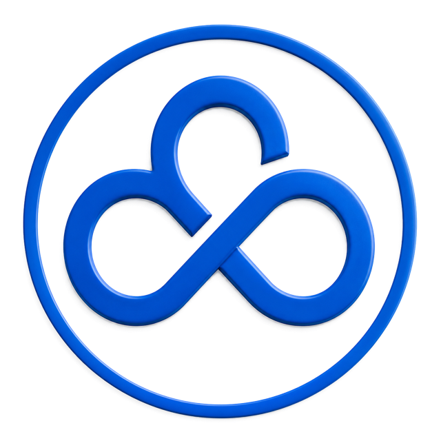
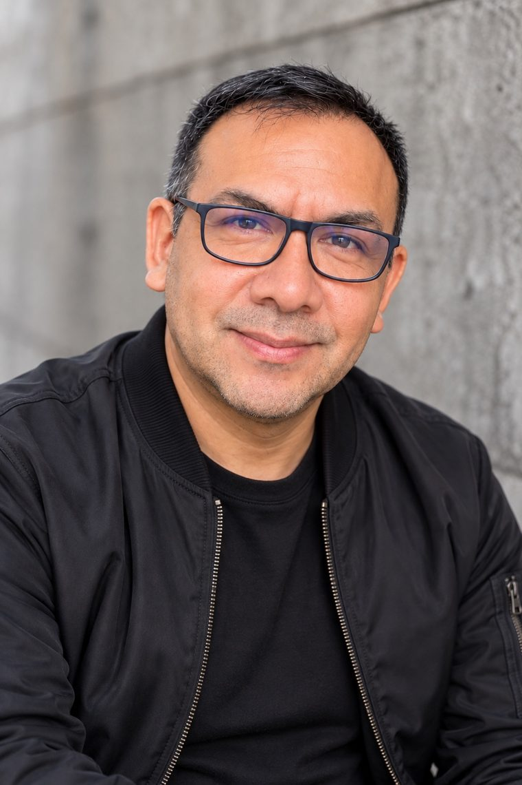

SIG y geomática
Diseño e implementación de sistemas de información geográfica, estándares de información geoespacial y plataformas de datos territoriales.
GeoEduca · por Eduardo Portuguez
Consultoría y formación en SIG, evaluación de riesgos y drones, con la experiencia de casi 30 años en gestión pública territorial.


Sobre Eduardo
Especialista en Geomática en el CENEPRED (PCM), donde participó en la implementación del SIGRID, sistema nacional que usan los tres niveles de gobierno. Ha dirigido unidades de catastro, obras y proyectos de inversión en gobierno local, y trabajó en el gobierno regional del Callao y en el IGN.
Docente universitario y de posgrado en gestión del riesgo de desastres. Cuenta con maestría concluida en Gestión del Riesgo de Desastres y Adaptación al Cambio Climático.
Servicios
Diseño e implementación de sistemas de información geográfica, estándares de información geoespacial y plataformas de datos territoriales.
Evaluación de riesgos por fenómenos naturales (Ley N.° 29664), planes de continuidad operativa y redes de alerta temprana.
Operación de drones y procesamiento de imágenes con Pix4D, además de asesoría para implementar unidades de RPAS.
Cursos y diplomados en SIG y GRD para autoridades, ministerios, universidades y empresas.
Trayectoria
Especialista en Geomática (desde 2016) y en Informática (2012–2016).
Manuales de levantamiento y mantenimiento de información catastral urbana.
Especialista GIS en el proyecto de erradicación de la mosca de la fruta.
Subgerente de Catastro y Habilitaciones Urbanas, de Obras Públicas y de Estudios y Proyectos de Inversión.
Especialista en Demarcación Territorial y cartografía regional.
Responsable de la implementación del SIG del IGN.
Proyectos destacados
Implementación del Sistema de Información para la Gestión del Riesgo de Desastres (versiones 1, 2 y 3) y de la aplicación SIGRID Collect (versiones 1 a 4), a nivel nacional y para los tres niveles de gobierno.
Dirección de la implementación de la unidad de Sistemas de Información Geográfica del área técnica: equipos, servidores y plotters.
Docencia
Formación reciente
Contacto
Cuéntame qué necesitas y en qué plazo. Respondo por correo con los siguientes pasos.
proyectos@eduardoportuguez.com